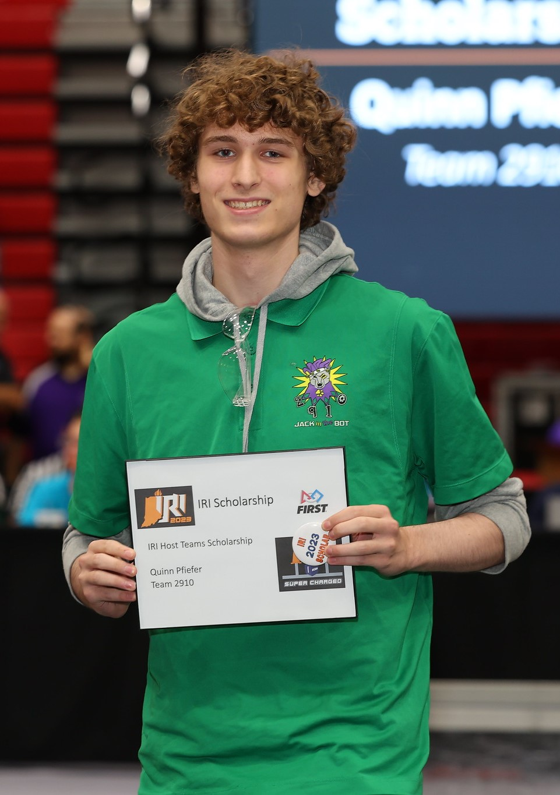

Quinn Pfeifer

Hey, thanks for checking out my website!
My name is Quinn. I'm currently a
first-year at the
University of Washington, Seattle campus. I am majoring in
Computer Science at the
Paul G. Allen School of Computer
Science & Engineering. To check out my academic history and
shiny 4.0, see
Academics. To hear about my
experience with robots,
see Robotics. To learn about my
volunteering experience, see Volunteering. To get a
broad overview and what I know and
what I can do, see
Skills. To learn more about me
as a person and what I like to do in my
free time, see
Hobbies. To view my
résumé, see
Résumé. Finally, to
reach out to me, see
Contact. I look forward to
hearing from you! :)
Academics
Robotics
Volunteering
Skills
Hobbies
Résumé
Contact